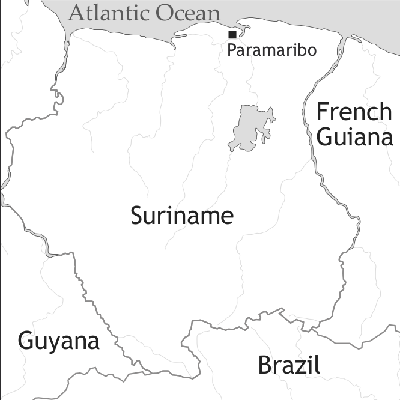

by Donald Winford and Ingo Plag

The 20 languages spoken in Suriname (Lewis 2009) include Dutch, the official language, Hakka Chinese, Hindustani, some Amerindian languages (e.g. Arawak) and seven creole languages, among them Sranan, Aluku (or Boni), Kwinti, Matawai, Ndjuka (or Okanisi), Pamaka, and Saramaccan. Sociohistorical and linguistic evidence indicates that they all have their origins in the early creole varieties that emerged on the plantations of Suriname in the late 17th to early 18th century (Hoogbergen 1990). Modern Sranan is a direct continuation of this early contact language while the maroon creoles split off from it after their founders escaped from the Surinamese plantations. Sranan is spoken both as a first language and a lingua franca for inter-group communication throughout the country and in western French Guiana. The other creoles used to be spoken only in the interior in maroon communities founded by escaped slaves in the early to mid-18th century, but, due to increasing migration towards the coast, these varieties are today also well represented in the coastal urban centres of Suriname (Paramaribo, Albina, Mongo) and, with the exception of Matawai and Kwinti, in the urban centres of French Guiana (St. Laurent, Kourou, Cayenne, Mana) (Price 2002, see also Smith 2002).
The history of Sranan before 1850 is dealt with in van den Berg & Smith (2013). The foundations of the current structure of Surinamese society were laid in 1863 when Emancipation was declared. After a ten year period in which they were placed under state supervision, the ex-slaves left the plantations in large numbers, and had to be replaced by contract labourers brought in from China, India and Java. According to Arends (2002: 127), about 70,000 Asian workers were brought to Suriname between 1863 and 1942. The population as a whole tripled from around 50,000 in 1880 to 150,000 in 1938. Today, the population stands at around 400,000, but it is estimated that a further 200,000 people of Surinamese descent live in the Netherlands – a result of a massive exodus in the 1970s and later, in reaction to Suriname’s attainment of independence. Voorhoeve (1971: 305) claimed that roughly half of the population is of Asian background, and the other half of African descent. In addition, Suriname has the highest number of Amerindian groups of any one country in the Caribbean area – a total of 8, comprising roughly 10,000 people in all (Carlin & Boven 2002: 43).
As a result of this demographic diversity, Suriname is home to 20 different languages. Within the Amerindian groups, there are 8 languages of the Cariban and Arawakan families, four of which are near extinction, since they are no longer being transmitted to children. Among the Asians we find Sarnami Hindi, Kejia Chinese, and Javanese. The languages of the Black population include the Western Maroon creoles (Saramaccan and Matawai; see Aboh et al. (2013) on Saramaccan), the Eastern Maroon creoles (Ndjuka, Aluku, Kwinti and Pamaka; see Migge (2013) on Nengee), and of course, Sranan. These diverse ethno-linguistic groups are united into a wider speech community by Dutch, which serves as the official language, and Sranan, which serves as the lingua franca.
The social dominance of Dutch is due primarily to the fact that education was made compulsory in 1876, with Dutch as the sole medium of instruction from elementary school on. The colonial government adopted a policy of either ignoring or assigning low status to the various ethnic languages. The use of Sranan in particular was suppressed in the schools, while Dutch was promoted as the language of educational and social opportunity. Even after Suriname attained full independence in 1975, the official policy toward Dutch and the ethnic languages continued unchanged. Eersel (1971: 317) observed that command of Dutch is almost the only way to win prestige and success in Suriname. Surinamese Dutch, however, differs in significant ways from European Dutch, primarily due to its acquisition as a second language in a multilingual setting, with accompanying influences from learners’ first languages, and changes due to its own internal dynamics (see de Kleine 2002).
Despite the hegemony of Dutch, Sranan enjoys status as a language of wider everyday communication, and as a symbol of Surinamese identity. Beginning in the 1950s, there has been a strong movement toward fuller recognition and promotion of Sranan, triggered particularly by the cultural-nationalist movement called Wie Eegie Sanie ‘Our Own Thing’, as well as by the efforts of enlightened teachers such as Jacques “Papa” Koenders. The first book of poetry in Sranan, written by Trefossa, had a great impact, and was followed by a flowering of the creole language in poetry, drama and other forms of art and literature. The use of Sranan has now become common in the mass media, as well as in communication between the government and the people, in areas such as health, taxes, and of course politics. Sranan is also used in certain forms of popular music, such as Kawina and Kaseka (Arends & Carlin 2002: 285). There is even a creole version of the national anthem. In short, speakers of Sranan have become increasingly proud and accepting of their language, though it is still far from being adopted as an official language, and is still not fully standardized. Arends & Carlin (2002: 285) emphasize the need for a dictionary and grammar of Sranan, as well as a historical dictionary of all the Surinamese creoles.
Because of its use by so many distinct groups, Sranan exists in several somewhat different varieties. Those used by speakers in the Netherlands as well as by Dutch-dominant Surinamese have been influenced to varying degrees by Dutch. The varieties used by groups of Asian descent as well as by Amerindians also appear to have been influenced by the respective ethnic languages, though little research has been done to investigate such influences. There is also a great deal of variation in the language according to social class and status. Since people of higher social standing often learn Sranan as a second language, their Dutch-influenced Sranan has become somewhat distinct from the more conservative variety learnt as a first language by members of the working classes, who refer to their vernacular as “Nengre” (Black Talk). Voorhoeve (1971: 308) points out that a more “prestigious” form of Sranan, which he calls Church Sranan, was regarded as a more acceptable and fashionable style of speaking than the “common creole.” It was created by Moravian missionaries who started to use Sranan in church around 1780 – a practice that still continues in Moravian churches, while other Christian churches use Dutch. Today, Church Sranan has ceased to exist outside of church, and it is not clear how vibrant it remains.
In general, little is known of the sociolinguistic factors that influence choice of language in Suriname, or of the prevailing ideologies that relate to such variation. Very little has been written about the social motivations for code switching, or about people’s attitudes toward the varieties of Sranan in use today. Eersel (1971: 318) gives an interesting but highly impressionistic account of how choices of Dutch or Sranan differ according to social status and gender differences, as well as the need to emphasize solidarity or familiarity versus distance. With regard to ongoing changes in Sranan, he notes that nationalistic purists have long been warning against the pervasive influence of Dutch on the creole. But there is as yet no official or concerted effort to combat such influence, or to preserve Sranan in its more traditional or authentic form.
Modern Sranan has five monophthongal oral vowels (see Table 1). Vowels can be allophonically lengthened in some environments (e.g. before /r/), but there are also some rare minimal pairs in which vowel length is distinctive, as in poti ‘put’ vs. pôti ‘poor’. All monophthongs can be nasalized when preceding a tautosyllabic nasal. There are five diphthongs /oʊ, aʊ, eɪ, aɪ, oɪ/, as in kowru ‘cold’, asaw ‘elephant’, krei ‘cry’, bai ‘buy’, and boi ‘boy’.
| front | central | back | |
| close | i | u | |
| mid | e | o | |
| open | a |
The consonants in Table 2 are phonemic. Allophonic variants of these consonants include [ʧ] and [ʤ] for /k/ and /g/ before front vowels, respectively, [ʃ] for /s/ before front vowels, and [ŋ] for all nasals in final position.
| bilabial | labio-dental | alveolar | palato-alveolar | palatal | velar | glottal | ||
| plosive | voiceless | p | t | k | ||||
| voiced | b | d | ɡ | |||||
| nasal | m | n | ɲ | ŋ | ||||
| flap | ɾ | |||||||
| fricative | voiceless | f | s | h | ||||
| affricate | voiceless | ʧ | ||||||
| voiced | ʤ | |||||||
| lateral/approximant | w | l | j | |||||
Syllable structure is severely constrained, with only nasals as possible word-final codas. Word-internally also other consonants can occur. This has, however, rather exceptional status and seems largely restricted to liquid-plosive clusters (e.g. marki ‘mark’, kapelka ‘butterfly’, marbonsu ‘a kind of wasp’, but cf. also maspasi ‘emancipation’). In rapid speech, as well as in compounds, syllable-final or word-final vowels can be deleted (e.g. af’sensi < hafu sensi ‘half cent piece’). Initial clusters are mostly restricted to obstruent-sonorant combinations (as in sneki ‘snake’, plata ‘flat’, fri ‘free’, gwe ‘leave’). Violations of sonority principles do occur, but mostly in more recent loanwords (e.g. strati ‘street’ < Dutch straat, but see also the older skin < English skin).
Modern Sranan has some ideophones (e.g. sin ‘high-pitched whistle or noise’, or tyubun, used to indicate the intensity of a splashing sound), and the language is generally not tonal (but see Smith & Adamson 2006 on some potentially pertinent phenomena). Word stress is assigned from the right; it normally falls on the ultimate syllable if heavy (i.e. if ending in a nasal), and on the penultimate syllable if the final syllable is light (e.g. Sranán [sraˈnaŋ] ‘Suriname, Sranan’, bikási ‘because’).
Nouns are invariant in form. Number distinctions are conveyed by the definite articles, singular a and plural den.1
(1) a. A boi leisi den buku.
the.sg boy read the.pl book
‘The boy read the books.’
Indefinite singular nouns are marked by preverbal wan (< English one), while indefinite plural nouns, generic nouns and abstract nouns require no article.
b. A tjari wan buku kon gi mi.
‘She brought me a book.’
c. Di mi go dape, mi si pikin a ini a osu.
when I go there I see child loc in the.sg house
‘When I went there, I saw children in the house.’
There are two demonstratives, proximate disi and distal dati, both of which occur post-nominally.
Gender distinctions are sometimes expressed through compounds with man- and uma-, e.g. manpikin ‘boy child’ vs. umapikin ‘girl child’, but in general gender is not marked.
Possession is conveyed either by juxtaposition, with the possessor preceding the possessed noun, or by the preposition fu, which introduces the postposed possessor (cf. 3a-b). Possessive pronouns may also precede the possessed noun (cf. 3a, 8).
Adjectives precede the noun (a bradi liba ‘the wide river’; wan bigi blaka dagu ‘a big black dog’).
The same form of the personal pronoun is used for subject, object, and possessive functions. The only exception to this is the third person singular pronoun, which has distinct subject and independent (object and possessive) forms. Pronouns are not gender-differentiated.
| subject |
independent pronouns (also used as object and possessive pronouns) |
|
| 1sg | mi | mi |
| 2sg | yu, i | yu, i |
| 3sg | a | en |
| 1pl | un(u), wi | unu, wi |
| 2pl | un(u) | unu |
| 3pl | den | den |
Emphasis on subject and object pronouns may be indicated by putting special stress on the pronoun or by combining it with the emphatic marker srefi ‘self’.
Reflexive constructions also employ srefi.
The demonstrative pronouns are disi ‘this’ and dati ‘that,’ which also function as demonstrative modifiers (as we saw in (2) above).
They may be combined with articles:
Categories of tense, mood and aspect are expressed by invariant free forms, all of which are preverbal, except for the postposed Completive Aspect marker kaba (summarized in Table 4 below). The preverbal forms function as auxiliary verbs or markers, while kaba seems to function more like an adverbial meaning ‘already’. Tense categories include Relative Past, expressed by ben, and Future, expressed by o (< English go).
As in other creoles, the unmarked verb conveys present time reference with statives and past time reference with non-statives when speech time (S) is the point of reference.
Overtly marked aspectual categories include Imperfective, expressed by (d)e, and Completive (Perfect), expressed by VP-final kaba (< Portuguese acabar ‘finish’).
| Form | Category | Meanings |
| ben | Relative past | past events “distanced” from speech time (S); background past or “framepast” especially in narratives; past in relation to another reference point in the past |
| o | Predictive Future | later time reference; intention or prediction; predictability |
| ø | Perfective | states or events seen as unanalyzed wholes |
| e | Imperfective | situations (both states and occurrences) seen as “unbounded” and ongoing at reference time, which encompasses situations that are repeated, habitual, in progress or continuous |
| k(a)ba | Completive Perfect | conveys the meaning ‘already’; expresses the sense of a “perfect of result” with non-statives, and the sense of a state beginning in the past and continuing to the reference point with statives |
Sranan has a rich system of modality, covering a range of meanings associated with types of possibility, obligation, and need (summarized in Table 5 below). Areas of possibility include learned ability, expressed by sabi ‘know’, physical ability (man, kan ‘can’), permission (mag ‘may’) and general (root) possibility (kan ‘can’).
Under negation, man is the preferred choice.
Epistemic possibility is expressed by kande ‘maybe,’ or expressions such as a kan (de) taki ‘it can be (the case) that.’
Obligation (deontic necessity) is expressed by musu (fu) or by the reduced form mu (< musu).
Stronger obligation is also expressed by abi fu ‘have to.’
Musu (fu) is also used to express epistemic necessity or probability, that is the sense of ‘it must be the case that’, based on the speaker’s inference. Alternatively, the expression a musu de (taki) ‘it must be that’ can be used.
Sranan also employs the modal sa (< Dutch zal) to convey a sense of expected future (dynamic use) and inferred certainty (epistemic use).
Finally, the senses of need and desire are conveyed by the expression (abi) fanoudu (fu) ‘have need of’ and the main verb wani ‘want’ respectively.
| Possibility | ||
| Dynamic (root) | kan (positive); man (negative) | |
| Deontic (permissibility) | mag, OR kan (positive); man (negative) | |
| Epistemic | kande; a kan de taki S | |
| Necessity | ||
| Dynamic (obligation) | musu; abi fu | |
| Deontic (imposed obligation) | musu | |
| Epistemic (probability) | musu OR a musu de taki S. | |
| Future expectation | ||
| Dynamic | sa | |
| Epistemic (inferred certainty) | sa | |
| Learned Ability | sabi ( fu) | |
| Desire | wani | |
| Need | abi NP fanowdu; abi fanowdu fu S | |
The usual auxiliary order is “tense > modality > aspect”:
However, the canonical ordering shown above is by no means the only one found. For example, the Imperfective marker can precede the modality marker.
Word order is SVO in all sentence types, declaratives, yes/no interrogatives and imperatives. Interrogatives employ rising intonation as distinct from the other two types, which have falling intonation.
In sentences with ditransitive verbs the indirect object precedes the direct object.
Many verbs are ambitransitive, that is, they can be used both transitively and intransitively.
Hortatives are introduced by meki ‘make,’ or kon ‘come.’
The negative marker no occurs immediately before the first element of the VP, no matter how many TAM particles appear before the verb.
Negative clauses with negative indefinites are characterized by negative concord.
There are two copulas: (i) the equational copula na/a, used for present time nominal predication, and (ii) de, which is used in locative/existential constructions, with adverbial expressions and for nominal predication under other TAM specifications.
In cases of movement such as wh-questions and predicate clefting, na must be replaced by de. In sentences with future time reference it is replaced by a verb meaning ‘turn’ or ‘(be)come’.
The copula de may be freely preceded by TAM markers and the negator.
Predicate adjectival constructions lack copulas, since the predicative property items behave like intransitive verbs, being directly preceded by TAM markers. They also undergo predicate cleft, leaving a copy in situ and appear in comparative serial verb constructions.
The following examples illustrate:
Most property items also function as transitive verbs in Sranan, similarly to ambitransitive verbs like broko ‘break’ and priti ‘split’.
Passive constructions do not display characteristics associated with the analytic passives found in English. In particular, they lack a ‘be’ auxiliary, morphological marking on the verb, and an agentive prepositional phrase.
In general, activity verbs tend to passivize more readily than other types such as stative and perception verbs.
Causative constructions employ meki ‘make.’
In focus constructions, the focused element is introduced with a focus marker that is identical in shape to the equative copula. Two distinct types of focus are involved in these constructions – presentational or information focus and identificational or contrastive focus. Presentational focus constructions usually present some new topic, and usually involve the fronting of an NP.
Contrastive focus identifies some participant, entity, etc. that is presumed to be unknown to the hearer, as the actual one involved in the situation described. The fronted element may be any major constituent of the sentence, including NPs, PPs, and adverbs.
Closely related to the contrastive focus constructions are so-called “predicate cleft” constructions, in which verbs and predicative property items can undergo fronting. In such cases, however, a copy of the fronted element remains in situ.
When NP predicates are fronted, the copula de appears in final position in place of the equative copula na.
(49) a. Na leriman Jan de.
foc teacher Jan cop
‘John’s a teacher.’
b. *Na leriman Jan leriman.
Information questions (also called wh-questions) show wh-movement to sentence-initial position, but do not allow auxiliary inversion. Moreover, they employ a range of wh-expressions that are quite different from those in English (see Table 6).
| gloss | Sranan word | Early Sranan |
| ‘who’ | suma | o suma (< somebody) |
| ‘what’ | san | o sani (< something) |
| ‘where’ | pe | o pe (< place) |
| ‘how’ | fa | o fasi (< fashion) |
| ‘why’ | (fu) san ede | fu san ede (‘for what head = reason’) |
Coordinate structures may be divided into three main types: simple coordination with dan ‘then’ or en ‘and’; adversative coordination with ma ‘but’ (< Dutch maar); and disjunctive coordination with of (< Dutch of ‘or’). The preposition nanga ‘with’ may be used for simple coordination of noun phrases.
Relative clauses: As Nickel & Wilner (1984: 24) note, “Relative clauses may be used to specify a human character (using di or dati), a non-human character (using di or san), a location (using pe ‘where’), or a manner (using fa ‘how’).”
Other types of relative clauses in Sranan include fu ‘for’ relatives (similar to infinitival relatives in English).
Sentential complements can be divided into two types: fact-type (that-type) and potential (for-type). These complements may appear as full sentences, or may be “reduced” in some way (e.g. lacking overt subjects or TAM marking, etc.). Each type can be further differentiated.
Fact-type complements include the following:
- arguments of predicates like ‘seem’;
- complements of assertion verbs (‘say’, ‘tell’, etc.); of psychological state verbs (‘know’, ‘believe’, etc.); and of perception verbs (‘see’, ‘hear’, etc.).
- complements of causative ‘make’.
Complements to ‘seem’ and to evaluative predicates like ‘true’ are always extraposed sentential subjects.
In complements to verba dicendi and similar verbs, complementizer taki is often replaced by dati (< Dutch dat) or by a zero complementizer.
Perception verbs take two types of complement, a finite type introduced by taki as well as a reduced (small clause) type, which describes events that are simultaneous with the time of the matrix verb.
Potential-type complements are introduced by the preposition fu ‘for’, and express potential events or states. The predicates that take them include desideratives (verbs of desire, intent, request and command), “aspectual” verbs like ‘start’ and modal predicates like ‘must’, ‘able’, ‘obliged’ etc.
Fu complements may be either reduced or full clauses. Note that, when matrix and complement subjects are co-referential, fu may be omitted.
Adverbial clauses are introduced by a wide repertoire of subordinators, some of which are reflexes of English conjunctions, e.g. bikasi < English because, while others are innovations, including di/te ‘when’, pe ‘where’, fa ‘how’, and others.
Temporal clauses are introduced by two subordinating conjunctions meaning ‘when’, di and te. Di is used in cases where a specific (usually past) situation is referred to, while te is used for irrealis (future or speculative) or non-specific, including habitual and non-realized, situations.
Other temporal conjunctions include fosi ‘before’ and compounds like baka di/te ‘after’.
We also find complex forms such as vanaf di ‘since,’ which combines a Dutch loan vanaf ‘from’ with di.
Clauses of reason generally are introduced by either bikasi ‘because’ or by fu di. Sranan also employs Dutch-derived subordinators such as want ‘because’ and omdat ‘because’.
Conditional clauses are of two types, real and unreal, both introduced by efu ‘if’.
Unreal conditions include hypotheticals and counterfactuals, both of which are conveyed by the use of the past tense in the if-clause and by combinations of past plus modal or future in the consequent clause. This applies to both present and past situations.
Concessive clauses may be divided into three types: concessive conditionals conveying the sense of ‘even if’; indefinite concessives (the sense of ‘whatever, no matter what’); and definite concessives (the sense of ‘although’) (Thompson & Longacre 1985: 196-8). The first two types are introduced by (a)winsi ‘although, even if’.
Definite concessives fall into two sub-types: those that convey the sense of ‘although’ and those that convey the stronger sense of ‘despite, no matter how much’. These are introduced by ala di, or ala fa,
Purpose clauses are introduced by the preposition fu ‘for’. The subject of the purpose clause may be overt, even when it is coreferential with the matrix subject.
Some other interesting aspects of Sranan grammar include the following:
In addition to focus constructions (§8), Sranan allows left dislocation and topicalization both of which involve the fronting of an NP followed by some comment on it. The distinction between the two lies in the fact that a resumptive pronoun (or sometimes a copy of the moved NP) appears in left dislocations but not in topicalizations.
Sranan also employs serial verb constructions (SVCs) of several types, including directional, dative/benefactive, and comparative serials, though there are others that are more difficult to classify.
In directional SVCs, the serial verb (V2) indicates the direction of the motion expressed by the main verb (V1). In dative/benefactive SVCs, a verb meaning ‘give’ functions as V2, and introduces a recipient or a benefactive argument. Comparison is expressed by an SVC in which the V2 is either pasa ‘(sur)pass’ or moro ‘exceed’ (< English more). The latter is the more frequently used. Sranan has also adopted more Dutch-like comparative structures, though not all native speakers accept these.
Sranan also employs SVCs in which teki ‘take’ functions as the V1, introducing instrumental and comitative arguments. We also find so-called “resultative” SVCs, in which the V2 expresses a result stemming from the action of the V1. There are various other kinds of SVCs found in Sranan, which are more difficult to classify, because there is freer selection of verbs.